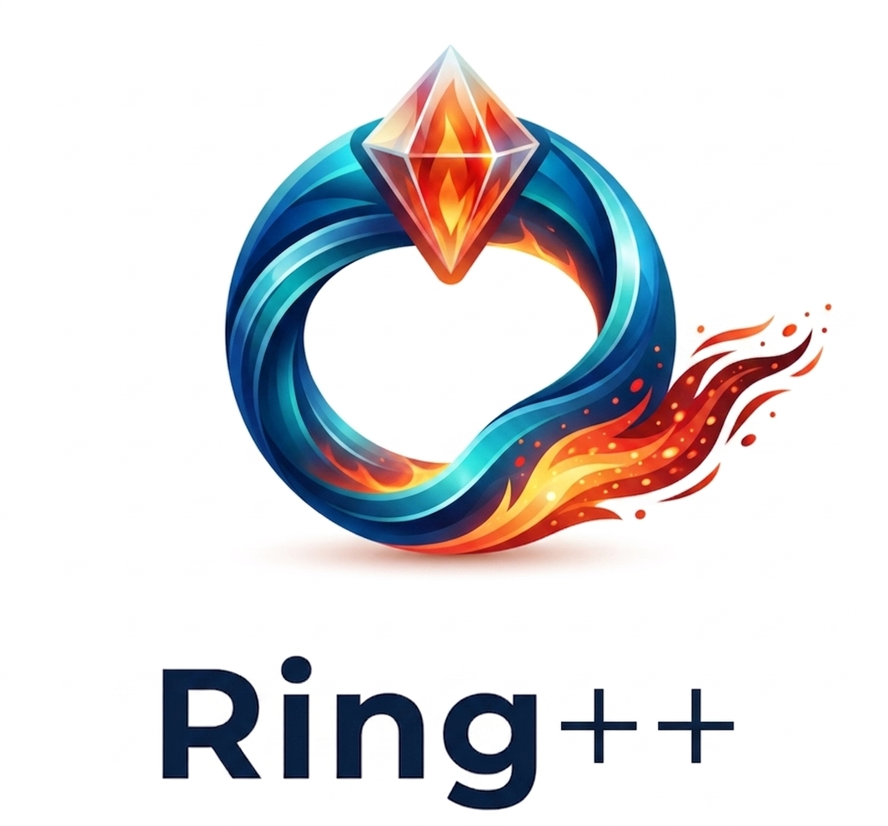

Ring++ runs programs written in the Ring language, without Ring. It is one program of 5 MB, for Windows and Linux, that compiles Ring code and runs it — faster than Ring, and refusing what it cannot run correctly instead of giving a wrong answer. It is built for the code that already exists: Softanza, its 300,000 lines, and the applications built on them.
Until August 2026, Ring++ was a library that ran inside Ring, and a contribution to it. It is now the runtime itself. On 14 October 2026 I retired Ring from all my projects: Softanza, and the customers who depend on it, run on Ring++, and the work goes on towards Haro, the language that comes next.
Why, technically and in how Ring is governed, is a page of its own. The issues of Ring that Ring++ solves are another, each shown by a program run on both. The library era is archived, read-only.
Every answer is compared with Ring 1.27 itself, built from its own source. Where Ring++ answers differently, it is a decision on record, never an accident.
Lists that are arrays, strings passed without copying, methods found once instead of at every call: the places where Ring's design costs it most, replaced.
The compiler is also the checker. A line it cannot run correctly is refused with its reason, instead of failing in production on the day that line is reached.
One program, no C compiler, nothing downloaded at run time. Nothing it depends on can be withdrawn by anyone else, which is why it exists.
| what is measured, before every release | the result |
|---|---|
| Softanza's own tests: the checks that pass on Ring, passing on Ring++ | 8,540 of 8,540 on Windows, 7,873 of 7,873 on Linux |
| Ring programs compared with Ring, line by line | 5,112 |
| Speed against Ring 1.27, on the same programs | 4 to 2,000 times faster |
| What has to be installed beside it | nothing |